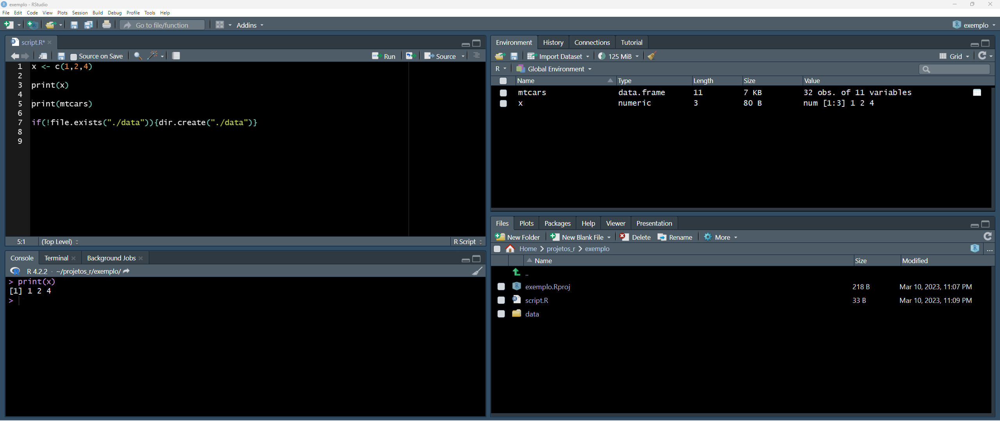

install.packages("tidyverse")Introdução ao R
Fluxo de Trabalho: Fundamentos
Noções básicas de codificação
Execução de códigos no Script
- Atalho de de teclado: ctrl + enter

Criação de um projeto - Passo 1

Criação de um projeto - Passo 2

Criação de um projeto - Passo 3

Criação de um projeto - Passo 4

Dicas
- É muito importante que todos os arquivos do projeto fiquem dentro de uma mesma pasta
- A pasta “raiz” não pode conter caracteres especiais
- Dica: crie uma pasta projetos-r dentro da pasta “C:” do Windows e, dentro dela, crie sub pastas para cada projeto
E você vai chegar aqui

Criando o seu primeiro Script

Paineis do R Studio

Ajuste dos paineis

Source Code
É onde o código é escrito. Vários tipos de arquivos podem ser utilizados: Scripts, Rmarkdown, Quarto etc.

Console
Mostra a saída do que é feito no source code. Também pode ser usado para escrever códigos, mas não é possível salvá-los

Environment/History

No environment estão os diversos objetos que são criados pelo código: vetores, dataframes (bancos de dados), tibbles etc.
File/Plots/Packages/Help
Neste painel são mostrados os arquivos do projeto, os gráficos produzidos, a ajuda e informações sobre os pacotes (instalar, ativar, desativar etc).

File/Plots/Packages/Help

Cheat Sheets


Pacotes (packages)
- O que é um pacote?
- Coleção de funções, objetos e documentação
- Estendem as capacidades do R e adicionam novos recursos
- Criados pela comunidade
Como instalar um pacote
- Só precisa ser feito uma vez
- Não coleque a instalação dos pacotes no script
- Se o arquivo for compartilhado, não é legal modificar as configurações de outra pessoa
Como carregar o pacote
library(tidyverse)- Precisa ser feito em cada novo script
- A cada novo uso do script
- Colocar todos os pacotes no início do script
Como obter informações sobre as funções do pacote
library(tidyverse)
?tidyverseExercício
03:00
Instale os seguintes pacotes: tidyverse, car e psych
Resposta
install.packages("tidyverse")
install.packages("car")
install.packages("psych")Exercício
03:00
Carregue os pacotes que foram instalados anteriormente
Resposta
library(tidyverse)
library(car)
library(psych)